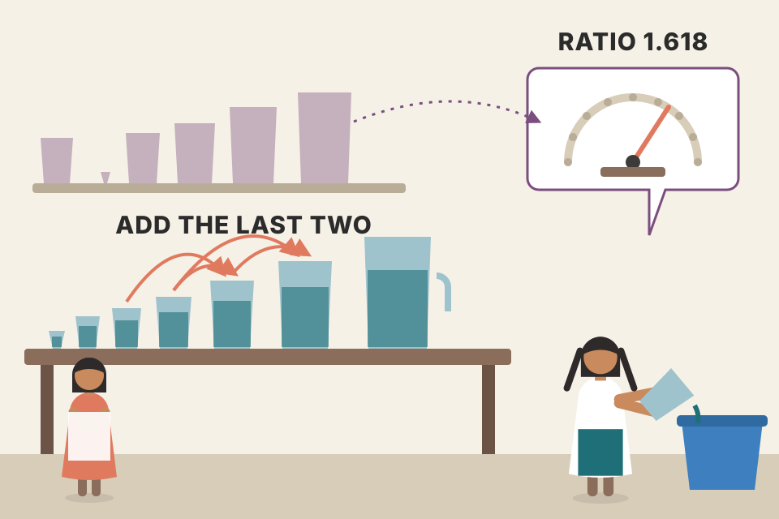
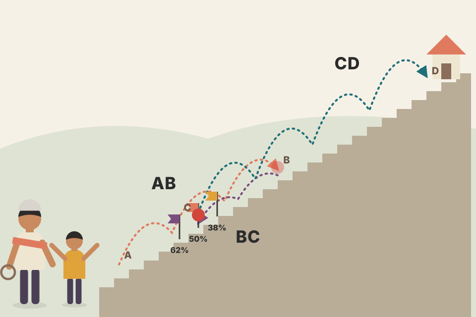
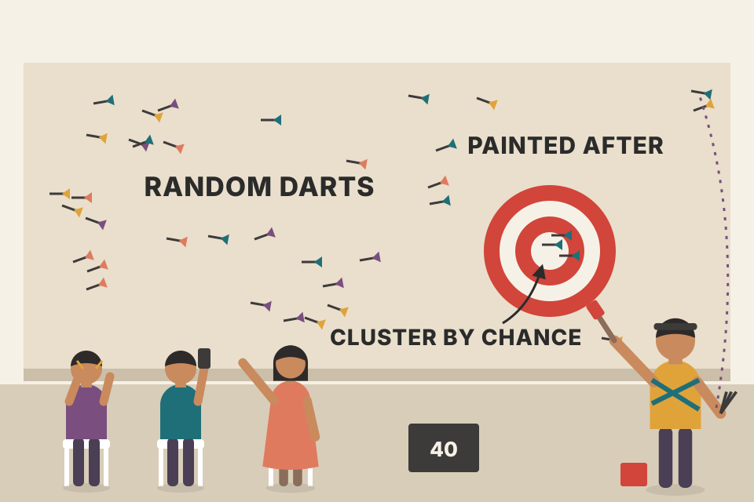
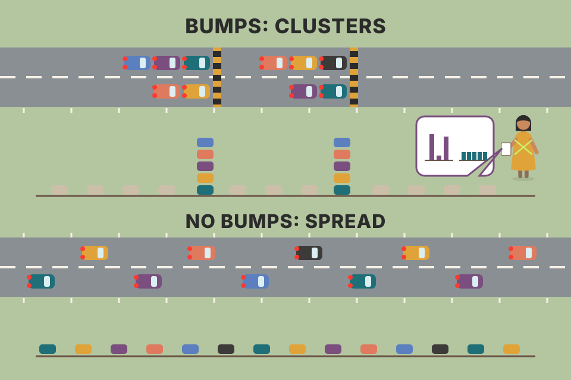

Fibonacci traders say pullbacks tend to stop at 38.2%, 50% or 61.8% of the leg before them. Grimes takes that claim and turns it into a counting problem. He measures every swing in ten years of stocks, futures, forex and random-walk data, then looks for a bump at the Fibonacci levels. He doesn't find one. This page walks through the chapter in order: where the numbers come from, how the tools are used, why good-looking chart examples prove nothing, how the test is built, every table, and what to do instead. Each idea has a live tool. All prices on this page are simulated, and the simulations are my own reconstructions of his method. They are not his data and not market evidence.
"Scientific truth by consensus has had a uniformly bad history." (David Douglass, the chapter's epigraph, pdf p473)
The chapter has three parts: the claim, the test, and the verdict. Every step of the test removes one more excuse ("you counted the wrong swings", "only the good trades matter", "your filter hid the shallow pullbacks"), and each time the answer stays the same.
The sequence. Start with 0 and 1. Each next number is the sum of the last two: 0, 1, 1, 2, 3, 5, 8, 13, 21, 34, 55, 89, 144, 233, … Western writing first mentions it through Leonardo of Pisa, nicknamed Fibonacci (short for filius Bonacci, "son of Bonacci"). He used it as an example in his book Liber Abaci in 1202.
Elliott's "Nature's Law". In the mid-twentieth century Ralph N. Elliott decided the sequence was the base of what he called Nature's Law. He saw it in the human body (one head, two arms, three parts to each arm and leg, five senses), in the piano keyboard, in the Great Pyramids (which he said fulfilled Biblical prophecy), and in the number of people who signed the Declaration of Independence. He also said there are "approximately" 89 primary chemical elements. Grimes points out the errors: Elliott counted eight white and five black keys to an octave, but if eight white keys span the octave the matching black keys number six; his count of 89 keys on a "complete keyboard" is also muddled; and there are 94 naturally occurring elements, not 89. Elliott's reasoning: if the series matters so much in nature, it must matter in markets. Grimes' view is that the writing on this was convoluted then and has not got clearer since.
The ratios. The core claim is that both the size and the timing of market swings follow ratios taken from the sequence. Divide a number by the next one and you get close to 61.8%. The book calls this constant Φ (phi), the Golden Ratio, and agrees it really does appear in art, architecture and nature. Divide by the number two places on and you get about 38.2%; three places on, about 23.6%. The further along the sequence you go, the closer the quotients get (89/144 is much nearer 0.618 than 3/5 is). Fibonacci traders also watch 50%, which Grimes notes is not a Fibonacci ratio at all.
Fibonacci numbers themselves. Some traders give special weight to the numbers in the sequence. Grimes calls this illogical: any two starting numbers summed the same way, Xt = Xt−1 + Xt−2, produce the same ratios further out. His examples: {2, 5, 7, 12, …} and even {3; 9,785; 9,788; …}. So there is no reason to prefer 5- or 13-minute bars over 6- or 12-minute bars, or to use 55 or 144 bars for a moving average because those numbers are "Fibonacci". He says the practice has no justification but is very common.

Pour two cups of any size into a bucket, then keep adding a cup equal to the last two cups together. After a dozen pours the last cup is always about 1.618 times the one before it, whatever sizes you started with. The ratio belongs to the adding rule, not to the numbers 1, 1, 2, 3, 5.
The rule Xt = Xt−1 + Xt−2 is a linear recurrence. Its terms behave like c·φt + d·ψt, where φ ≈ 1.618 and ψ ≈ −0.618 are the two roots of x² = x + 1. The ψ part shrinks toward zero every step, so after a few terms only the φ part is left, and the ratio of neighbours is 1/φ ≈ 0.618 no matter what c is. The seeds only set c. That is the mechanism behind Grimes' point that the "Fibonacci numbers" carry nothing special. (This algebra is not in the book.)
Most maths texts write the Golden Ratio as φ = (1 + √5)/2 ≈ 1.618. The book's 61.8% is its reciprocal, 1/φ = φ − 1. The other levels are powers of it: 0.382 = 1/φ², 0.236 = 1/φ³. And 0.764 (a ratio that appears in section 03) is 1 − 0.236.
trading/murphy_moving_averages.md §5 records Murphy's remark that Fibonacci numbers (13, 21, 34, 55…) "seem to work well" as moving-average lengths. Grimes says the opposite: a 55-bar average is no better than a 54-bar one for being "Fibonacci". The calculator above shows why the numbers themselves can't matter.Why words matter. Every serious field has a shared vocabulary so people can talk about ideas instead of arguing about what they mean. Grimes' example: a surgeon who has to say "no, the other squiggly pink thing" is in trouble. Technical analysis lacks this: each author invents terms, reuses old terms in new ways, and some have hidden muddled thinking behind new jargon. Grimes uses one set of terms throughout the book:
Printing note: in this PDF the image above the caption "Figure 13.1 Schematic of Basic Market Structure" (pdf p475) is the two-peaked distribution that belongs to Figure 13.6. The A-B-C-D picture below is drawn from the text's description.
The three things Fibonacci ratios are used to predict:
Figure 13.2 applies retracements to several swings in Apple (AAPL) from mid-2006. Grimes says plainly it is a carefully chosen example: the pullbacks stop almost exactly at the 38.2%, 50% and 61.8% lines.

A ball thrown up a staircase: it climbs a flight (AB), drops back part of the way (BC), then climbs a longer flight (CD). The Fib claim is that the drop-back tends to land on particular steps: 38%, 50% or 62% of the way down the flight it just climbed.
Setup leg AB = 10 points up (say from 100 to 110). Retracement levels are measured down from B: 38.2% → 110 − 3.82 = 106.18; 50% → 110 − 5.00 = 105.00; 61.8% → 110 − 6.18 = 103.82. If the pullback ends at C = 105, the 161% extension rule projects CD = 1.618 × 10 = 16.18 points, a target near 121.18. (Prices 100/110/105 are mine; the 10-point leg, the 3.82/5.00/6.18 sequence and the 161% rule are the book's.)
The tool only needs two prices, A and B, so it can be drawn on any swing. Choosing which swing to draw it on is the real decision, and that choice is made with hindsight in published examples. Step through the simulated swings above: some pullbacks land near a line, many land between lines, and with five lines spaced 12–15% of the leg apart, almost every pullback is within a few percent of some line. That's why a chosen example like Fig 13.2 can look perfect.
Confluence means stacking ratios from many swings. You don't have to use only the last swing: you can join small swings into bigger structures, go far back in the chart, or use swings from higher time frames. Each gives new anchor points. When important ratios from different swings or time frames land near the same price, Fib traders call it a confluence, and traditionally believe it is stronger and more likely to turn price.
Figure 13.3 labels points A to G on the same AAPL chart and overlays four sets of lines. The aim is to show how the low at G "could have been foreseen":
Two warnings. First, the more lines you draw, the more likely some will look meaningful; with enough lines it is virtually certain. Second, you can always find impressive examples for any idea, and a convincing picture does not mean the idea can be traded. The real question is whether, over a large set of swings, Fibonacci ratios tell you more than any other randomly chosen ratio would. To answer that, Grimes turns to the data.

Throw a handful of darts at a wall, then draw a target around the spot where three of them landed close together. The cluster is real, but it says nothing about your aim: with enough darts some always bunch up.
The chart uses random walks (no hidden pattern at all), with swings found by my rule at 2 × ATR. At each confirmed swing point it takes the earlier swing points you choose, forms every leg between a high and a low among them, and draws that leg's 38.2 / 50 / 61.8 / 76.4% retracements. A "confluence" is two or more lines within your tolerance of the turning price. Then it repeats the count with the same number of lines at random ratios between 20% and 80%. Pooled over thousands of turning points, Fibonacci lines and random lines produce confluences about equally often, and both rates climb as you add swing points. That is Grimes' first warning, measured. In a random walk this has to be so; the point is that a confluence found on a chart can't by itself tell real structure apart from line density.
Each leg adds four lines inside its own price range. With five earlier swing points (the default) there are six high–low legs, so 24 lines packed into a few ATRs of price; with eight points, 16 legs and 64 lines. The chance that two of 24 lines sit within a quarter-ATR of any price you pick is high whatever the ratios are. A confluence is a statement about how crowded the chart is, unless you can show it happens more often at real turns than at random prices or with random ratios. That comparison is exactly what the rest of the chapter sets up.
trading/vwap_volume_profile_explained.md §4 records a course that stacks "confluences" (checklist points, POC). My backtests there (trading/backtest_results_summary.md) found that each added confluence made the VWAP setups less bad but none made them good.The goal. No test will satisfy every believer. Grimes' aim is narrower: use only tools that have objective, strong support in the data. If the levels really reflected some "sacred geometry" behind the universe, a test that reveals it should not be hard to build.
Two principles. Simplicity: avoid tightly structured, possibly over-specified tests and gently tease any Fib relationship out of raw data. Objectivity: no looking at charts, no human input; an algorithm pulls out every event by fixed rules.
The question: "Are retracements in markets more likely to stop at Fibonacci levels than any other place?" If yes, then among many retracements measured as ratios of their setup legs, more should end near 38.2%, 61.8% and perhaps 50%.
The method. Treat every swing as an extension (CD). When D is known, record two numbers, both as a percentage of the setup leg:
The setup leg is always the denominator, and it is always the previous swing in the same direction as the extension. Neither number can be recorded until D is finished. Then each swing gets measured twice over its life: once as the extension of its own setup leg, and later as a retracement (or a setup leg) for the swings after it.
A ruler that resets its length to each setup leg. Whatever the stock's price or volatility, the setup leg is "1", and the pullback and the next leg are read off as fractions of it. That makes a $5 swing in one stock and a ₹500 swing in another comparable.
Retracements above 100% are allowed by this scheme: in step 2 the "pullback" of 300% is really a whole up-move measured against a tiny down setup leg. Section 07 removes those. Because every swing is a denominator for the next records and a numerator for others, the same set of swing lengths creates both the R and the E numbers, which matters a lot in section 09.
Drawing swings by rule. Collecting the two measures needs every swing in the market marked, which is no small job. Grimes' rule set is very simple: swings are first-level pivot highs and lows (a bar whose high is above its neighbours' highs, or whose low is below theirs), qualified by a move of a certain ATR away from the pivot before a change of direction counts. The exact rules are his own but he says they don't matter much; many charting packages draw similar swings and you can write your own. He also warns that his results are a test of swing ratios as his model defines them, and another swing definition could find some ratios more or less significant. Figure 13.5 shows his swings on AAPL daily, each labelled with R (retracement) and E (extension).
What to look for. If Fib levels matter, the simplest test is to collect every retracement as a ratio of its setup leg and draw a histogram: simple counting, just a lot of it. A Fib-driven market should show peaks at the levels, like the idealised Figure 13.6 (two humps, at 38.2% and 61.8%), or at least some bump or distortion near them. A second check: compare real markets with random-walk data. If some force shapes prices, the two should differ. In short, the levels cannot be important and also be invisible in the data.

If a road has speed bumps at 38 m and 62 m, the spots where cars slow down pile up at those two marks. If there are no bumps, the stopping spots are smeared out evenly. The histogram is a photo of where pullbacks stopped.
The ATR filter decides what counts as a swing. Raise it and small wiggles merge into bigger swings (fewer, longer swings; fewer shallow pullbacks recorded). Set it to 0 and every alternating first-level pivot is a swing. Try both on the chart: the R and E labels change a lot swing by swing, but section 09 shows the proportions across many swings barely move. My rule here: find first-level pivots, keep the most extreme one while price moves the same way, and accept a change of direction only when price has moved at least k × ATR(20) back from that extreme. It follows his description but is not his code.
The run. The swing rules were run over the whole test universe from 2000 to 2010, recording retracement and extension for each swing. Two liquidity checks:
Table 13.5 gives raw retracement statistics by asset class. Pick a table below; the chart puts each class's mean and median side by side and the grid lists every class's numbers. What Grimes reads from it:
40 random walks × 2,000 bars, swings by my rule with the ATR filter from section 05. These numbers move when you change the filter or roll new markets. They are not Grimes' results.
20,212 dropped swings = 11.7% of the equity results, so the equity total before the cut was about 20,212 / 0.117 ≈ 172,800, of which 152,863 were kept (≈ 88.4%, close to 100 − 11.7). Forex: 1,639 / 152,863 ≈ 1.07%, the "about 1.1%" in the text. The median retracement of all swings is 98.5%: half of all "pullbacks" retrace less than the full setup leg and half retrace more. (Arithmetic mine.)
Why is the median so close to 100%? If swing lengths were independent and drawn from one distribution, the next swing would be equally likely to be shorter or longer than the last, so R = BC/AB would have a median of exactly 100%. The mean sits above it because a ratio blows up when the denominator is small: a short setup leg followed by a normal swing gives 300%, 500%, 1,000%. Real and random data both behave this way, which is why the random walk row looks like the others. My simulation shows the same median ≈ 100%. (This explanation is mine, not the book's.)
Why cut at 100%. Fib ratios are supposed to work in trends. Most traders wouldn't call a move that retraces more than 100% of the setup leg a pullback: it's better seen as a trend leg the other way or a failed pullback. In an uptrend, a pullback that breaks the setup leg's low is more likely to be a losing trade for a trend trader.
Two ways forward. One is to add a trend definition and filter, and only measure in the trend's direction. That raises many questions: how to define trend, what to do when it's unclear, whether to allow ranges and how to measure swings in them. Each answer takes the test further from the raw data. The simpler way, which Grimes takes: drop every retracement over 100% of its setup leg, and its extension. That is itself a simple trend definition: a pullback under 100% holds a higher low in an uptrend (or a lower high in a downtrend), the key feature of most structure-based trend definitions.
Table 13.6 (choose it in the selector in section 06): about 50% of swings are removed. The large outliers go, the mean moves close to the median, and dispersion drops sharply (total: mean 65.3%, sd 20.7%, median 66.3%, IQR 33.6%). Both mean and median are near 61.8% but clearly above it.
Figure 13.7, the histogram of all retracements ≤ 100%, shows no peak or distortion at 38.2% or 61.8%. 38.2% is a non-event; there's no peak at 61.8; 80% looks about as important as 50%, and both about as important as 61.8 or any other number in that range. Not what you'd see if the levels mattered.
Figure 13.8 splits it by asset class (remember forex and random have small samples). The forex histogram is bimodal, two peaks, like the idealised Fig 13.6. But that, and the shape of the random-walk histogram, could come from the small samples; and the first bump sits near 48%, not at the Fibonacci level (the book prints "31.8%" here, almost certainly meaning 38.2%). The second forex peak is around 80%, also not a Fibonacci ratio. Again, no support for the claim.
A table-top, not two hills. Pullbacks stop anywhere from about 40% to 75% with roughly equal likelihood, thinning out below 30%. Small samples make the table-top look bumpy, like a photo taken in low light: draw 858 swings a few times and watch "peaks" appear and move.
Two things shape the curve. Below ~30%, the ATR filter stops very shallow pullbacks from counting as swings at all (section 09 returns to this). Above, the shape is what ratios of similar-sized random swings produce when you keep only the cases where the second is smaller than the first. The bump test in the readout compares the share of retracements within ±1.5 points of 38.2 and 61.8 with the share in same-width windows 4 points either side of each level. A real Fib effect would push that ratio well above 1; without one it sits near 1. With a random walk it can't find anything, and Grimes' real-market histograms looked just like this. The small-sample draws use a smoothed resample of the pooled swings, so every bump you see in them is noise by construction.
The idea. Perhaps Fib ratios describe the profitable pullbacks better than all pullbacks. To check, pick out the good ones with post hoc rules, knowing this can't be traded in real time. If Fib levels showed up in these best cases, a trader might learn to spot them live. The trade in mind: buy into the pullback to profit from the extension (sell into the bounce in a downtrend). The three rules:
Table 13.7 (selector in section 06): about another 40% of swings go, yet centre and spread barely change (total mean 63.3%, sd 20.6%, median 63.6%). Figures 13.9 and 13.10 (all qualified swings, then by asset class) again show no excess of pullbacks ending at or near the Fibonacci levels.
Raw 161,754 → ≤ 100%: 82,987 kept (48.7% removed, "about 50%") → qualified: 51,958 kept (37.4% of the 82,987 removed, "approximately another 40%"). Overall, 32% of all swings are "best trades". (Arithmetic mine, from the table totals.)
Picking only the winning lottery tickets and then checking whether their numbers cluster. If even the winners' numbers are spread evenly, there was no pattern to learn.
Filtering on the extension (rules 1 and 3) changes which records you keep, but the retracement depth and the extension size are only loosely linked, so the retracement histogram keeps its shape. If a Fib effect were hiding among the good trades, the filter would have concentrated it; it didn't. Try unticking filters above: the shape of the curve hardly moves.
The belief. Smaller pullbacks lead to bigger extensions: shallow pullbacks mean powerful trends. Test: group extensions by the depth r of the pullback before them. If true, the average extension should be bigger for shallower pullbacks.
Table 13.8 (with the volatility filter) shows the opposite: mean extension rises with depth, from 36.7% for r ≤ 25% to 157.1% for r > 100%. The r ≤ 25% group is small (1,752) because the volatility filter removes most very shallow pullbacks; that's an artefact of the measuring method, not market structure.
Removing the filter. Maybe many very shallow pullbacks lead to big moves and the filter hides them. They don't matter for the Fib question (they're far below the main levels) but they do for this one. Table 13.9 repeats Table 13.6 with no volatility filter: the text says the count grows nearly threefold, since many small swings had been folded into larger ones; dispersion is larger; but mean (63.8%) and median (64.6%) barely move. Swing sizes shrink but their proportions hold, so the filter wasn't distorting the structure. Table 13.10 repeats Table 13.8 with no filter: many more swings, especially small ones, and the same pattern. Deeper pullbacks are followed by larger proportional extensions (130.8% → 188.6%), in clear contradiction of standard teaching, at least in this data and period. Grimes adds a caution: these are proportions. A tiny setup leg can produce an extension that is proportionally huge but small in points compared with an extension off a big setup leg.
R = BC/AB and E = CD/AB share the same denominator AB. When AB happens to be short, both ratios come out large; when AB is long, both come out small. So deep retracements and big extensions go together even if the three swing lengths are completely unrelated. My random walks have no memory at all, yet they reproduce the rising pattern (top chart). Tick "shuffle" to divide R and E by two different, unrelated setup legs: the link disappears and the bucket means go flat. This is the "spurious correlation of ratios" statisticians have warned about since Karl Pearson (1897). It matches Grimes' own caveat that the measures are proportional, and it suggests the finding says more about the measuring stick than about trend strength.
Two long setups in the same stock. Setup A: 40-point leg, 10-point pullback (r = 25%), 30-point extension → E = 75%. Setup B: 12-point leg, 10-point pullback (r = 83%), 18-point extension → E = 150%. B has twice the proportional extension but 12 fewer points of profit. (Numbers mine.)
The volatility filter only lets a swing count once price has moved a minimum distance (k × ATR). A shallow pullback therefore needs a long setup leg to be recorded at all; long setup legs are big denominators, so their extensions look small. That's why the r ≤ 25% row in Table 13.8 is both small (1,752) and has the lowest mean (36.7%). The no-filter run moves every row up because tiny setup legs now count, making many very large ratios.
As printed: Table 13.9's total is 127,748, about 1.5× Table 13.6's 82,987 rather than "nearly threefold", while the ≤ 100% rows of Table 13.10 add up to about 756,000. Table 13.10 also prints the same min (4.5) and max (4,554.6) for four groups. The numbers on this page are exactly as the book prints them; the mismatch is in the source.
A stock rallies from ₹1,000 (A) to ₹1,200 (B). The chapter's evidence says: expect the pullback to end around 50% → ₹1,100, but anywhere in the 40–75% plateau → between ₹1,120 and ₹1,050 is ordinary. A 61.8% line at ₹1,076.40 is just one price inside that zone, no more likely than ₹1,090. A pullback below ₹1,000 (more than 100%) breaks the higher low and isn't a pullback in an uptrend any more. (Prices mine.)
Setup leg from 0 to 1 is done. Place a limit buy at retracement level L (30% to 90%); stop just below A (price 0); target the 161.8% projection of AB (price 1.618). If price reaches the target before your order fills, there's no trade. 1,500 random paths per run (small steps of 2% of the setup leg), shared by every level. On a random walk the win rate falls in a straight line as L deepens (theory: win rate = (1 − L) / 1.618) and the expected average result is zero at every level, before costs. The simulated average wanders a few percent either side of zero; that is sampling noise, and because every level shares the same paths the wobble is smooth rather than jagged. There's no kink at 38.2, 50 or 61.8. A real Fibonacci effect would have to show up as a kink like that in real data, and Grimes' histograms show none. This is a demonstration of the null, not evidence about any real market.
Deeper entries win less often but win more and lose less per trade. On a fair (random) market the two always balance to zero, at every level. The only way a level can be special is if price really does stop there more often than elsewhere, and that is exactly what the retracement histograms measure. A plateau means no level is special. Any edge in a pullback trade has to come from somewhere else: the trend context, how the pullback forms, the entry trigger, management.
trading/backtest_results_summary.md: my one remaining lead from the Currency Pros checklist test used a limit at the 75% retracement (15-min intraday, +₹1.35L on Nifty 200 in 11 months, mostly from Jun–Oct 2026, roughly flat on Nifty 50, "paper trade only"). In light of this chapter, 75% is just one point on the plateau; whatever edge exists is more likely in the checklist than the level. Worth testing 65% or 70% before believing the level matters.trading/vwap_volume_profile_explained.md §4 calls the course's 67% and 75% entries "Fibonacci retracement". Neither is a Fibonacci ratio; by this chapter's evidence the label carries no information either way.Because any two seed numbers summed the same way (Xt = Xt−1 + Xt−2) give the same ratios further out, e.g. {2, 5, 7, 12…} or {3; 9,785; 9,788…}. The ratios come from the adding rule, not the specific numbers, so 5- vs 6-minute bars or a 55- vs 54-bar average has no Fibonacci justification. (Section 01)
50% is not derived from the sequence. 76.4% is used because it equals 100% − 23.6%. (Sections 01, 03)
AB = setup leg, BC = retracement/pullback, CD = extension (next trend leg). Both R and E are divided by AB, the previous swing in the same direction as the extension. (Sections 02, 04)
At 35: setup 15, pullback 5 → R = 33%; extension 15 → E = 100%. At 25: setup is the down leg 25 → 20 = 5, "retracement" 20 → 35 = 15 → R = 300%; extension 35 → 25 = 10 → E = 200%. (Section 04)
(1) The more lines you draw, the more likely some look significant; with enough lines it is virtually certain. (2) You can always find impressive examples, and a good example doesn't mean the idea can be traded. The real test is whether Fib ratios are more informative than random ratios over many swings. (Section 03)
The distribution has a long right tail (huge ratios when the setup leg is tiny), pulling the mean above the median. If consecutive swing lengths are roughly independent and alike, the next swing is as likely to be shorter as longer, so the median ratio sits near 100%. (Section 06; the second part is my explanation, not the book's.)
A move beyond 100% isn't a pullback but a leg the other way or a failed pullback, usually a loser for trend traders. Keeping only R ≤ 100% means the pullback held a higher low (uptrend) or lower high (downtrend), the core of structure-based trend definitions. It avoids a separate, debatable trend filter. (Section 07)
The forex sample is small (858 swings ≤ 100%), so bumps can be noise; and the peaks are near 48% and 80%, not at 38.2% or 61.8%. (Section 07)
Extension > 25% of the setup leg; retracement ≤ 100% (higher low); extension makes a new high beyond B. They depend on what happens after entry (post hoc), so they're a research construct. Even so, the retracement stats barely changed (mean 63.3%, median 63.6%). (Section 08)
The volatility filter needs price to move a minimum distance before a swing counts, so most very shallow pullbacks never register: a measurement artefact. He re-ran without the filter (Tables 13.9, 13.10): many more swings, larger dispersion, but similar mean and median proportions and the same rising pattern. (Section 09)
Grimes: the measures are proportional, so a small setup leg can give a proportionally big but nominally small extension. Beyond the book: R and E share the denominator AB, so a short AB inflates both, and a random walk with no memory reproduces the pattern. (Section 09)
Treat 61.8% as one arbitrary point inside a 40–75% plateau where pullbacks commonly end, centred near 50%. The level adds no information, so any edge must come from context, the pattern, or the trigger, and it has to be shown by testing against nearby non-Fib levels (e.g. 55% or 70%). Using Fib ratios for entries, stops or targets is, in Grimes' words, likely a serious mistake. (Section 10)
A fair random walk is a martingale: deeper entries win less often but win more and lose less, and the two balance exactly. A real effect would appear as a kink (higher win rate than the straight line) at the Fib levels, which is the same thing as a bump in the retracement histogram. Grimes' histograms show no bumps. (Section 10, beyond the book)